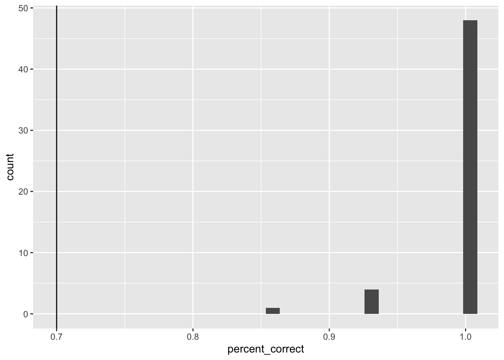
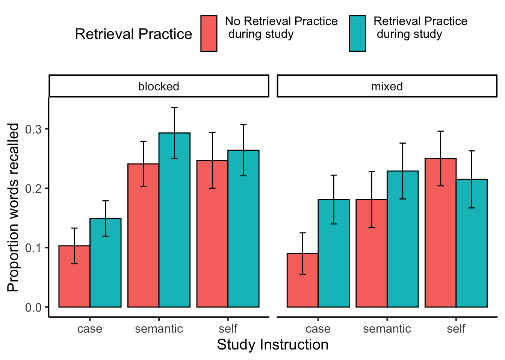

library(dplyr)
library(tidyverse)
library(jsonlite)
library(xtable)
library(data.table)Experiment 1B: Amazon Turk Master’s Participants
Abstract
This is a reproducible analysis script for Experiment 1B.
Overview
The purpose of this document is to provide an in-principle pipeline for reproducible analysis.
Data collected 5/26/23 (Mturk masters)
The first version of this experiment (1A) had a couple issues. The proportion of recall vs no-recall trials during encoding was supposed to be equal (6 and 6 for each question condition), but it was not (4 recall vs 8 no recall). There were supposed to be 3 filler items before and after the main lists, but there were three at the beginning and two at the end. This experiment fixes those issues.
The first experiment was conducted on Amazon’s Mechanical Turk with few restrictions. Some of the responses to the free recall task indicated participants were not performing the experiment (e.g., typing in paragraph responses, or nonsense).
This experiment again recruited participants from Amazon’s Mechanical Turk, but used the following restriction: Masters, US, 95% hit approval, more than 200 hits
Load libraries
Import Data
# Read the text file from JATOS ...
read_file('data/E1B_self_reference_deID.JSON') %>%
# ... split it into lines ...
str_split('\n') %>% first() %>%
# ... filter empty rows ...
discard(function(x) x == '') %>%
# ... parse JSON into a data.frame
map_dfr(fromJSON, flatten=T) -> all_dataDemographics
library(tidyr)
demographics <- all_data %>%
filter(trial_type == "survey-html-form") %>%
select(ID,response) %>%
unnest_wider(response) %>%
mutate(age = as.numeric(age))
age_demographics <- demographics %>%
summarize(mean_age = mean(age),
sd_age = sd(age),
min_age = min(age),
max_age = max(age))
factor_demographics <- apply(demographics[-1], 2, table)A total of 53 participants were recruited from Amazon’s Mechanical Turk. Mean age was 46.1 (range = 29 to 69 ). There were 30 females, and 23 males. There were 49 right-handed participants, and NA left or both handed participants. 28 participants reported normal vision, and 25 participants reported corrected-to-normal vision. 52 participants reported English as a first language, and 1 participants reported English as a second language.
Pre-processing
We were were interested in analyzing data from participants who appeared to engage with the task as intended. To identify participants for inclusion we used accuracy data from the case judgment task. We included participants if their accuracy was 70% or greater.
Case judgment accuracy
Get case judgment accuracy for all participants.
case_judgment <- all_data %>%
filter(encoding_trial_type == "study_word",
study_instruction == "case") %>%
mutate(response = as.character(unlist(response))) %>%
mutate(accuracy = case_when(
response == "0" & letter_case == "upper" ~ 1,
response == "1" & letter_case == "upper" ~ 0,
response == "0" & letter_case == "lower" ~ 0,
response == "1" & letter_case == "lower" ~ 1
)) %>%
group_by(ID) %>%
summarise(percent_correct = mean(accuracy))
ggplot(case_judgment, aes(x=percent_correct))+
geom_histogram() +
geom_vline(xintercept=.7)
post-task questions
post_questions <- all_data %>%
filter(trial_type == "survey-text") %>%
select(ID,response) %>%
unnest_wider(response)All exclusions
Identify any participants that would be excluded.
all_excluded <- case_judgment %>%
filter(percent_correct < .7) %>%
select(ID) %>%
pull()
length(all_excluded)[1] 0filtered_data <- all_data %>%
filter(ID %in% all_excluded == FALSE) Accuracy analysis
Define Helper functions
To do, consider moving the functions into the R package for this project
# attempt general solution
## Declare helper functions
################
# get_mean_sem
# data = a data frame
# grouping_vars = a character vector of factors for analysis contained in data
# dv = a string indicated the dependent variable colunmn name in data
# returns data frame with grouping variables, and mean_{dv}, sem_{dv}
# note: dv in mean_{dv} and sem_{dv} is renamed to the string in dv
get_mean_sem <- function(data, grouping_vars, dv, digits=3){
a <- data %>%
group_by_at(grouping_vars) %>%
summarize("mean_{ dv }" := round(mean(.data[[dv]]), digits),
"sem_{ dv }" := round(sd(.data[[dv]])/sqrt(length(.data[[dv]])),digits),
.groups="drop")
return(a)
}
################
# get_effect_names
# grouping_vars = a character vector of factors for analysis
# returns a named list
# list contains all main effects and interaction terms
# useful for iterating the computation means across design effects and interactions
get_effect_names <- function(grouping_vars){
effect_names <- grouping_vars
if( length(grouping_vars > 1) ){
for( i in 2:length(grouping_vars) ){
effect_names <- c(effect_names,apply(combn(grouping_vars,i),2,paste0,collapse=":"))
}
}
effects <- strsplit(effect_names, split=":")
names(effects) <- effect_names
return(effects)
}
################
# print_list_of_tables
# table_list = a list of named tables
# each table is printed
# names are header level 3
print_list_of_tables <- function(table_list){
for(i in 1:length(table_list)){
cat("###",names(table_list[i]))
cat("\n")
print(knitr::kable(table_list[[i]]))
cat("\n")
}
}Conduct Analysis
Study phase immediate recall
# get recall proportion correct for each participant
study_phase_recall <- filtered_data %>%
filter(phase == "study_recall",
encoding_recall == "recall") %>%
separate(col = paragraph,
into = c("first_word","second_word"),
sep = " ",
remove = FALSE,
extra = "merge") %>%
mutate(accuracy = tolower(target_word) == tolower(first_word),
study_instruction = factor(study_instruction, levels= c("case","semantic","self"))) %>%
group_by(ID,study_instruction) %>%
summarize(percent_correct = mean(accuracy))
# get means in each question condition
study_phase_recall_means <- get_mean_sem(study_phase_recall,
grouping_vars = c("study_instruction"),
dv = "percent_correct")
# run ANOVA
study_phase_recall <- study_phase_recall %>%
ungroup() %>%
mutate(ID = as.factor(ID),
study_instruction = as.factor(study_instruction))
study_phase_recall_aov <- aov(percent_correct ~ study_instruction + Error(ID/study_instruction),
study_phase_recall)
# save printable summaries
study_phase_recall_apa_print <- papaja::apa_print(study_phase_recall_aov)
knitr::kable(study_phase_recall_means)| study_instruction | mean_percent_correct | sem_percent_correct |
|---|---|---|
| case | 0.903 | 0.023 |
| semantic | 0.950 | 0.012 |
| self | 0.947 | 0.016 |
During the encoding phase participants attempted to immediately recall half of the words following the primary judgment. We computed proportion of correctly recalled words for each participant separately in each encoding question condition. These means were submitted to a one-way repeated measures ANOVA, with question type as the sole factor. Mean proportion correctly recalled was 0.903 in the case judgment, 0.95 in the semantic judgment, and 0.947 in the self-reference condition; \(F(2, 104) = 3.57\), \(\mathit{MSE} = 0.01\), \(p = .032\), \(\hat{\eta}^2_G = .028\).
Study phase word judgment
# get recall proportion correct for each participant
study_phase_judgment <- filtered_data %>%
filter(phase == "main_study",
encoding_trial_type == "study_word") %>%
mutate(accuracy = case_when(study_instruction == "case" &
letter_case == "lower" &
response == 1 ~ TRUE,
study_instruction == "case" &
letter_case == "lower" &
response == 0 ~ FALSE,
study_instruction == "case" &
letter_case == "upper" &
response == 0 ~ TRUE,
study_instruction == "case" &
letter_case == "upper" &
response == 1 ~ TRUE,
study_instruction == "semantic" &
likeable == "low" &
response == 0 ~ FALSE,
study_instruction == "semantic" &
likeable == "low" &
response == 1 ~ TRUE,
study_instruction == "semantic" &
likeable == "high" &
response == 0 ~ TRUE,
study_instruction == "semantic" &
likeable == "high" &
response == 1 ~ FALSE,
study_instruction == "self" &
likeable == "low" &
response == 0 ~ FALSE,
study_instruction == "self" &
likeable == "low" &
response == 1 ~ TRUE,
study_instruction == "self" &
likeable == "high" &
response == 0 ~ TRUE,
study_instruction == "self" &
likeable == "high" &
response == 1 ~ FALSE
),
study_instruction = factor(study_instruction,
levels= c("case","semantic","self"))) %>%
group_by(ID,study_instruction) %>%
summarize(percent_correct = mean(accuracy)) %>%
ungroup()
# get means in each question condition
study_phase_judgment_means <- get_mean_sem(study_phase_judgment,
grouping_vars = c("study_instruction"),
dv = "percent_correct")
knitr::kable(study_phase_judgment_means)| study_instruction | mean_percent_correct | sem_percent_correct |
|---|---|---|
| case | 0.998 | 0.002 |
| semantic | 0.973 | 0.009 |
| self | 0.780 | 0.026 |
For completeness we report mean performance in the encoding phase for each of the word judgment condition. See above table.
Recall Test
# obtain recall data from typed answers
recall_data <- filtered_data %>%
filter(phase %in% c("recall_1","recall_2") == TRUE ) %>%
select(ID,phase,paragraph) %>%
pivot_wider(names_from = phase,
values_from = paragraph) %>%
mutate(recall_1 = paste(recall_1,recall_2,sep = " ")) %>%
select(ID,recall_1) %>%
# separate_longer_delim(cols = recall_1,
# delim = " ") %>%
mutate(recall_1 = tolower(recall_1)) %>%
mutate(recall_1 = gsub("[^[:alnum:][:space:]]","",recall_1))
encoding_words_per_subject <- filtered_data %>%
filter(encoding_trial_type == "study_word",
phase == "main_study")
recall_data <- left_join(encoding_words_per_subject,recall_data,by = 'ID') %>%
mutate(recall_1 = strsplit(recall_1," "))
# implement a spell-checking method
recall_success <- c()
min_string_distance <- c()
for(i in 1:dim(recall_data)[1]){
recalled_words <- unlist(recall_data$recall_1[i])
recalled_words <- recalled_words[recalled_words != ""]
if (length(recalled_words) == 0 ) recalled_words <- "nonerecalled"
recall_success[i] <- tolower(recall_data$target_word[i]) %in% recalled_words
min_string_distance[i] <- min(sapply(recalled_words,FUN = function(x) {
stringdist::stringdist(a=x,b = tolower(recall_data$target_word[i]), method = "lv")
}))
}
# recall proportion correct by subject
# correct for unequal conditions. 4 words in recall, 8 words in no recall
recall_data_subject <- recall_data %>%
mutate(recall_success = recall_success,
min_string_distance = min_string_distance) %>%
mutate(close_recall = min_string_distance <= 2) %>%
group_by(ID,study_instruction,encoding_recall,block_type) %>%
summarise(number_recalled = sum(recall_success),
number_close_recalled = sum(close_recall)) %>%
ungroup() %>%
mutate(proportion_recalled = case_when(encoding_recall == "no_recall" ~ number_close_recalled/6,
encoding_recall == "recall" ~ number_close_recalled/6)) %>%
mutate(ID = as.factor(ID),
study_instruction = as.factor(study_instruction),
encoding_recall = as.factor(encoding_recall),
block_type = as.factor(block_type))
# Condition means
mean_recall_data <- get_mean_sem(recall_data_subject,
c("study_instruction","encoding_recall", "block_type"),
"proportion_recalled") %>%
ungroup() %>%
mutate(study_instruction = factor(study_instruction,levels = c("case","semantic","self")),
`Retrieval Practice` = case_when(
encoding_recall == "no_recall" ~ "No Retrieval Practice \n during study \n",
encoding_recall == "recall" ~ "Retrieval Practice \n during study \n",
))
recall_plot <- ggplot(mean_recall_data,
aes(x = study_instruction,
y = mean_proportion_recalled,
fill= `Retrieval Practice`))+
geom_bar(stat="identity",position="dodge",color="black") +
geom_errorbar(aes(ymin = mean_proportion_recalled - sem_proportion_recalled,
ymax = mean_proportion_recalled + sem_proportion_recalled),
width=.9, position=position_dodge2(width = 0.2, padding = 0.8)) +
ylab("Proportion words recalled")+
xlab("Study Instruction") +
theme_classic(base_size = 15)+
theme(legend.position = "top")+
facet_wrap(~block_type)
recall_plot
Recall test ANOVA
## Condition-level means
# get all possible main effects and interactions
recall_effect_names <- get_effect_names(c("block_type","encoding_recall", "study_instruction"))
recall_effect_means <- lapply(recall_effect_names, FUN = function(x) {
get_mean_sem(data=recall_data_subject,
grouping_vars = x,
dv = "proportion_recalled") %>%
as.data.table()
})
# run ANOVA
recall_aov <- aov(proportion_recalled ~ block_type*encoding_recall*study_instruction + Error(ID/(study_instruction*encoding_recall)), data = recall_data_subject)
# save printable summaries
recall_apa_print <- papaja::apa_print(recall_aov)
knitr::kable(xtable(summary(recall_aov)))| Df | Sum Sq | Mean Sq | F value | Pr(>F) | |
|---|---|---|---|---|---|
| block_type | 1 | 0.0512463 | 0.0512463 | 0.3750072 | 0.5430084 |
| Residuals | 51 | 6.9693686 | 0.1366543 | NA | NA |
| study_instruction | 2 | 0.8827743 | 0.4413871 | 12.9864894 | 0.0000095 |
| block_type:study_instruction | 2 | 0.0670980 | 0.0335490 | 0.9870785 | 0.3761950 |
| Residuals | 102 | 3.4667944 | 0.0339882 | NA | NA |
| encoding_recall | 1 | 0.1070056 | 0.1070056 | 4.1825414 | 0.0460186 |
| block_type:encoding_recall | 1 | 0.0002541 | 0.0002541 | 0.0099339 | 0.9209979 |
| Residuals | 51 | 1.3047773 | 0.0255839 | NA | NA |
| encoding_recall:study_instruction | 2 | 0.0766946 | 0.0383473 | 1.7643242 | 0.1764898 |
| block_type:encoding_recall:study_instruction | 2 | 0.0304254 | 0.0152127 | 0.6999230 | 0.4989928 |
| Residuals | 102 | 2.2169540 | 0.0217348 | NA | NA |
Write-up
# use data.table
#t <- as.data.table(Accuracy$means$`encoding_stimulus_time:encoding_instruction`)
#t[encoding_stimulus_time==500 & encoding_instruction == "F"]$mean_correctResults
We computed proportion correct recalled for each participant in each condition of the design. The proportions were submitted to a 3 (Encoding Question: Case, Semantic, Self) x 2 (Retrieval Practice: Yes, No) x 2 (Question Order: Blocked, Mixed) mixed factorial design with Encoding Question, and Retrieval Practice as within-subject factors, and Question Order as the sole between-subject factor. Mean proportions of correctly recalled words in each condition are shown in Figure X.
There was a main effect of encoding question, \(F(2, 102) = 12.99\), \(\mathit{MSE} = 0.03\), \(p < .001\), \(\hat{\eta}^2_G = .059\). Mean proportion recall was lowest in the case condition (M = 0.131, SEM = 0.017), and at similar higher levels for the semantic (M = 0.239, SEM = 0.022), and self condition (M = 0.245, SEM = 0.023).
The retrieval practice effect was also significant, \(F(1, 51) = 4.18\), \(\mathit{MSE} = 0.03\), \(p = .046\), \(\hat{\eta}^2_G = .008\). Mean proportion recall was lower for items that did not receive retrieval practice (M = 0.187, SEM = 0.017), compared to items that did receive retrieval practice (M = 0.223, SEM = 0.017).
No other main effects or interactions reached significance.
save data
save.image("data/E1_B.RData")